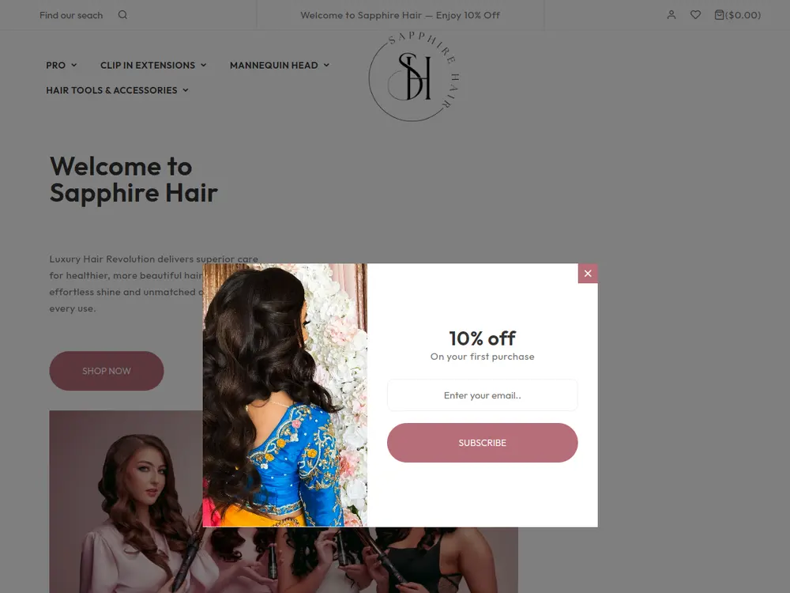
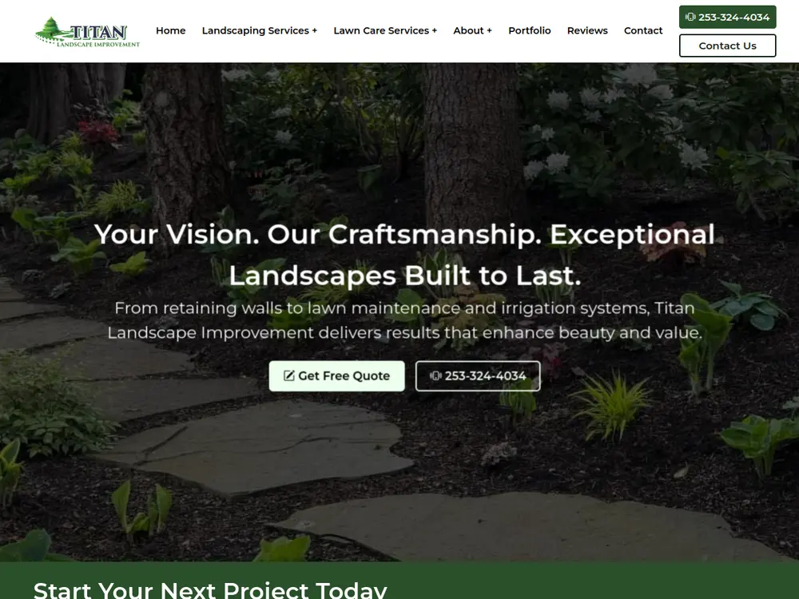
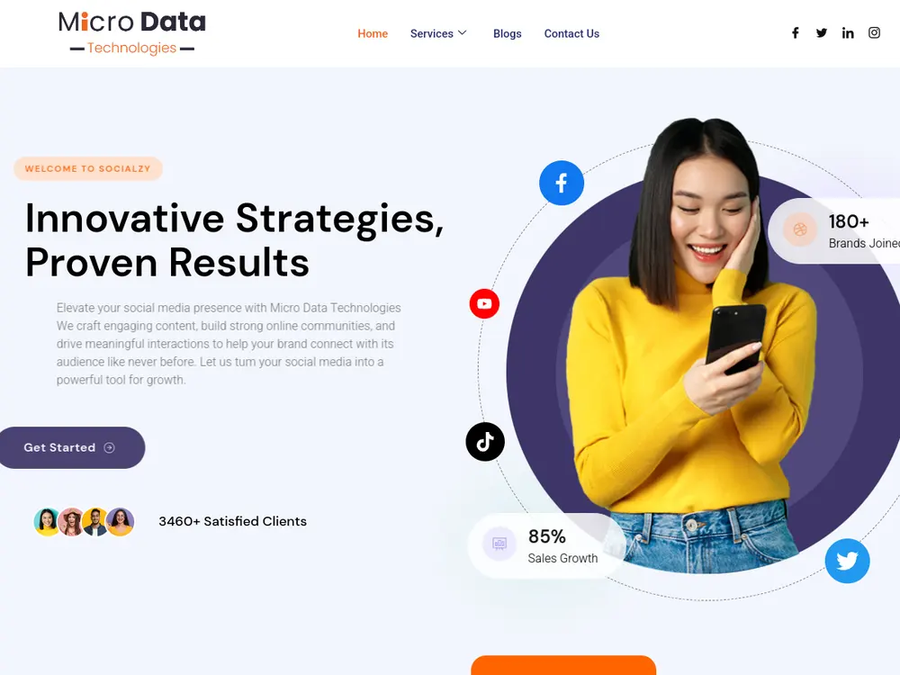

Symptom 01
Traffic is healthy, enquiries are not
Sessions have grown and the enquiry count has not moved. The leak is in the journey, not the top of the funnel.

Digital Marketing
Acquisition has a ceiling. Once you are paying a competitive rate for attention, the remaining growth comes from converting more of it and earning more per conversion. That work is unglamorous and reliably profitable.
5
Specialisms
CRO
Usual starting point
1–2
Social channels, done properly
100%
Failed tests reported
01 — The point
If a thousand visitors currently produce twenty enquiries, taking that to twenty-six is a thirty percent revenue increase with no additional acquisition cost — and it raises the return on every other channel simultaneously.
That is why this group exists and why conversion work is normally where we start. Content, email and social then compound it: content answers the question that precedes the purchase, email monetises an audience you already own, and social maintains presence where your buyers actually spend attention.
We will also tell you when a channel is not worth maintaining. Recommending you close a social account is a legitimate outcome of this work.
On reporting failures Roughly half of well-designed conversion tests do not produce a win. An agency that reports only successes is either hiding the losses or not testing. Our monthly review names the hypotheses that failed and what they taught us.
02 — Symptoms
If several of these are true, more traffic is not your problem.
Symptom 01
Sessions have grown and the enquiry count has not moved. The leak is in the journey, not the top of the funnel.
Symptom 02
Every prospect asks the same five things. Those five things are a content brief the site should be answering before the call.
Symptom 03
Thousands of past customers and no lifecycle flows. The highest-margin audience you own is being left alone.
Symptom 04
You have moved upmarket or narrowed your focus, and the messaging still describes a more generic business.
Symptom 05
People begin and do not finish. Usually friction, unexpected cost, or a trust signal missing at the moment of hesitation.
Symptom 06
Effort spread thinly across platforms your buyers do not use for this kind of decision.
03 — Capabilities
The order below is roughly how often each turns out to be the highest-return starting point.
Research, hypothesis, test, measure. Session recordings and funnel analysis where traffic is too low for valid A/B testing.
Briefs built from real buyer questions and sales objections, written to be useful rather than to hit a word count.
Segmented lifecycle flows triggered by behaviour — welcome, abandonment, post-purchase, reactivation — not a monthly broadcast.
Positioning before expression. Who you serve, what you are better at, and what you will decline.
One or two channels maintained properly, chosen by where your buyers actually make this kind of decision.
Most engagements combine two or three of the above with SEO or paid media on a shared set of success metrics.
Traffic-only growth
1×
Doubling traffic at a fixed conversion rate doubles cost as well as revenue. The ratio does not improve.
Conversion-led growth
>1×
A higher conversion rate lifts the return on every channel at once, including the traffic you have already paid for.
Illustrative, not a projection The comparison above describes the mechanism. Actual gains depend on how much headroom your current funnel has, which the research phase establishes.
04 — Process
A repeating monthly cycle rather than a project with an end date.
Weeks 1–2
Funnel analysis to find where people leave, session recordings to see why, a heuristic audit of the key journeys, and interviews with whoever handles enquiries. The last of these is consistently the most useful.
Week 3
Each hypothesis is written as a specific, falsifiable claim, then ranked by expected impact against implementation cost. Vague ideas do not enter the backlog.
Weeks 4–8
Changes implemented by our own developers, measured with adequate sample size. Where traffic is too low for valid A/B testing we use sequential before-and-after measurement and say so plainly.
Monthly
What we tested, what happened, what it means, and what is next. Failed tests are reported with the same detail as wins, because a failure that narrows the hypothesis space is still progress.
Quarterly
Step back from the test backlog and re-examine positioning, channel mix and whether the metric we are optimising is still the right one.
05 — Tooling
06 — Industries
Sectors with considered purchases, repeat business, or both.
07 — Evidence
Positioning, site, content and channel handled together rather than passed between vendors. All three are live now.
See all 28 projects
Clinic site with treatment pages and consultation capture.

Project-led site with gallery templates and local service pages.

Agency site led by proof points rather than by a list of services.
08 — Why us
Recommendations that need another agency to build them mostly do not get built. Our developers ship the test.
Around half of good hypotheses lose. Naming those is how the next round gets better rather than repeating itself.
The objections they answer weekly are the best content and conversion brief available, and it is usually free.
Knowing what a lead is worth changes which tests are worth running. Without it, prioritisation is guesswork.
Closing a channel that returns nothing frees budget for one that does. We will say so even when it shrinks our scope.
A conversion win raises the return on your SEO and paid spend at the same time, because the same team runs all three.
Almost always conversion rate optimisation. Improving the rate at which existing traffic converts costs less than acquiring more traffic, and every gain then multiplies the return on all other channels.
It is also the fastest of these to show a result.
For statistically valid A/B testing you generally need a few hundred conversions per month. Below that we work differently: qualitative research, session recordings, heuristic review and sequential before-and-after measurement.
Running an underpowered A/B test and acting on the result is worse than not testing at all.
Yes. Content is written by people who research the market rather than assembled from a template, and every brief starts from a specific question a real buyer asks.
We will interview your sales team, because the objections they hear every week are usually the best content brief available.
Fewer than you are probably on now. One or two channels done properly beats five maintained thinly, and for most B2B businesses in our client base that means LinkedIn plus one other.
We would rather recommend closing an account than pretend maintaining it is valuable.
For most businesses with an existing customer base it is the highest-margin channel available, because the audience is already owned.
The common failure is treating it as a broadcast newsletter rather than segmented lifecycle flows triggered by real behaviour.
Positioning first: who you serve, what you are better at, and what you will decline. Then the expression of it — messaging framework, visual identity and application across the website and campaigns.
We do not deliver a logo and a colour palette without the positioning work behind it.
Related
Content depth is the engine of organic growth; the two programmes share the same editorial calendar.
ExplorePaid search provides the fastest read on which message converts, which the whole funnel then benefits from.
ExploreSome conversion problems are structural. When the template is the constraint, testing around it has a low ceiling.
Explore
Next step
Send us analytics access and we will tell you which step loses the most people and what we would test first — before you commit to anything.